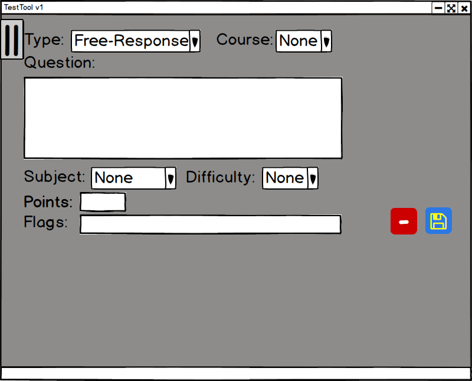

After the adding a question and choosing the desired type (as covered in Section 2.3), the screen will change accordingly depending on the chosen question type.
This section covers Free-Response Questions. Free-Response Questions cannot be auto-graded and must be given a score in the the Teacher page.
Choosing Free-Response as the question type loads the following screen as shown in Figure 3-13.

Figure 3-13: Free-Response Question
Points, Subject, and Difficulty are discussed in Section 2.3.
In a Free-Response Question, Question still acquires information the same way, but the box for displaying the input is larger to allow for longer questions and any necessary information needed to elaborate on the question.
Flags is a special section found in and Free-Response and Coding type questions. The user input words separated by a semicolon. Answers that contain words found in the Flag section are flagged during the grading section.
A completed Free-Response Question is shown in Figure 3-14.
Figure 3-14: Completed Free-Response Question